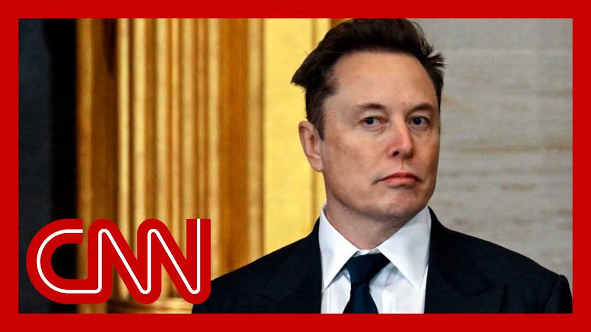

【“我已经做得够多了”：马斯克计划减少政治支出】
Summary: Elon Musk announces he will reduce political spending, citing past efforts and business impacts, while facing criticism and shifting public perception.
摘要： 埃隆·马斯克宣布将减少政治支出，理由是他已付出足够努力且对公司造成影响，同时面临批评和公众态度的转变。

⏱️ Estimated Reading Time: 14 min
I think, in terms of political spending, I'm going to do a lot less in th
我认为，在政治支出方面，我会大幅减少。
And why is that?
为什么呢？
I think I've done enough.
我觉得我已经做得够多了。
Is it?
是吗？
Is it because of blowback?
是因为反弹吗？
Well, if I see a reason to do political spending in the future I will do it.
嗯，如果未来有理由进行政治支出，我会去做。
I do not currently see a reason.
目前我没有看到理由。
Well, there you go.
好吧，就是这样。
The world's richest man and advi to the president announcing he will be dialing it back on campaign spending.
这位世界首富兼总统顾问宣布，他将减少竞选支出。
Elon Musk spent $290 million in the 2024 e
埃隆·马斯克在2024年大选中花费了2.9亿美元。
And keep in mind, he did not endorse Donald Trump until after the assassination attempt in July.
请记住，他直到7月刺杀未遂事件后才支持唐纳德·特朗普。
And it comes after Tesla has had a rocky few months to say the least.
此前，特斯拉经历了艰难的几个月，至少可以这么说。
Its net income dropped 71% from the year before.
其净利润同比下降了71%。
Musk has admitted his political involvement, particularly with Doge, was impacting his company's running or other businesses with great difficulty.
马斯克承认，他的政治参与，尤其是与狗狗币相关的活动，严重影响了他的公司运营和其他业务。
Yeah, I mean, but there's no turning back.
是的，但已经没有回头路了。
You're saying?
你是说？
I'm just here trying to make, government more efficient.
我只是想让政府更高效。
He was also becoming a political liability.
他也成了一个政治负担。
A poll from ABC in the Washingto Post found his disapproval rating growing.
《华盛顿邮报》和ABC的一项民意调查发现，他的反对率在上升。
So let's discuss this.
那么我们来讨论一下。
My panel is back with me.
我的专家小组回来了。
So first to you, what do you why do you think he made this announcement now?
首先，你认为他为什么现在宣布这个消息？
And it was interesting because he sort of said it, that he had to be prodded into explaining his rationale be
有趣的是，他似乎是被人催促才解释他的理由。
Well, it seems like a business, this is what this is what he's d
嗯，这似乎是商业决策，这就是他的做法。
He committed to the in the same interview.
他在同一次采访中承诺。
He committed to being the CEO of moving forward.
他承诺将继续担任CEO。
There had been talks about him potentially stepping down before
之前有传言说他可能会辞职。
He therefore he had to commit to maybe I'll back off on political spending.
因此他不得不承诺可能会减少政治支出。
What I heard in Wisconsin from a lot of people is that his involvement there didn't actually help.
我在威斯康星州听到很多人说，他的参与实际上没有帮助。
It hurt the candidate there.
反而伤害了那里的候选人。
And so I think that you probably have a lot of frontliners right Republican frontliners who are s
所以我认为可能有很多共和党前线人士在说——
wait a minute, maybe I'll take your money.
等一下，也许我会拿你的钱。
No, please don't campaign here.
不，请不要在这里竞选。
Last thing they want is ads running in the state saying so-and-so is funded by El
他们最不希望看到的是广告在州内播放，说某某是由埃隆资助的。
Elon Musk is pouring money into this state.
埃隆·马斯克正在向这个州砸钱。
That doesn't help any Republican at this point.
这在现阶段对任何共和党人都没有帮助。
So if you're Elon Musk, you're focused on making money, you're focused on your businesse
所以如果你是埃隆·马斯克，你会专注于赚钱，专注于你的业务。
and you're just taking a step ba
然后你只是退后一步。
because you do not want to be in the fray.
因为你不想卷入纷争。
You mentioned the special electi in Wisconsin.
你提到了威斯康星州的特别选举。
I want to play some some of the voter sound from that election about Elon Mu
我想播放一些选民关于埃隆·马斯克的录音。
Does Mr. Musk have an effect on your.
马斯克先生对你有影响吗？
Oh, yes.
哦，是的。
A lot of people are really hostile and like, oh my gosh, he's buying the elec
很多人非常敌视，比如，天哪，他在买选举。
And this should be illegal.
这应该是非法的。
And it probably should be illega to offer people money to vote a certain way.
用钱让人们按某种方式投票可能应该是非法的。
Maybe he should be taking care of his own business instead of everybody else's.
也许他应该管好自己的事，而不是别人的事。
So then, you know, one point the Democrats strategy was to make Musk the focus, righ
所以，你知道，民主党的一项策略是把马斯克作为焦点，对吧？
What is the Democrat's strategy if he does indeed step back?
如果他真的退后，民主党的策略是什么？
Well, I mean, he I don't think that he's going to like Elon Musk is determined.
嗯，我的意思是，我认为他不会——埃隆·马斯克是坚定的。
he's not like a normal business
他不像普通的商人。
He thinks that, humanity has to become transhuma
他认为人类必须变成跨人类。
and get to Mars.
并到达火星。
He's not joking
他不是在开玩笑。
He really believes that.
他真的相信这一点。
And so he's trying to drill holes in monkeys heads and put computers in there and all kind of stuff.
所以他试图在猴子头上钻孔，把电脑放进去，做各种事情。
And if he thinks that the United government is going to get in the way of his grand transhuman moon Mars mission, he will get back involved and I won't be too sad if he doe
如果他认为美国政府会阻碍他伟大的跨人类登月火星任务，他会重新参与，如果他这样做，我也不会太难过。
because I agree.
因为我同意。
This is weird stuff, man.
这是奇怪的事情，伙计。
You sent a bunch of kids into the federal government with laptops to steal all the da
你派了一群孩子带着笔记本电脑进入联邦政府窃取所有数据。
and do all kind of weird stuff and lay off all kind of people.
做各种奇怪的事情，解雇各种人。
In East Tennessee, women who used to help people wi special needs can help them, because Elon Musk doesn't want t
在东田纳西州，曾经帮助有特殊需求的人的妇女现在无法帮助他们，因为埃隆·马斯克不想。
He is a gold mine for us.
他是我们的金矿。
He's a platinum mine for us.
他是我们的白金矿。
We ain't going to let him go if he wants to.
如果他愿意，我们不会放过他。
If he gives one penny to anybody, we're runn
如果他给任何人一分钱，我们就会行动。
We are running an app.
我们正在运行一个应用程序。
You're running it in.
你在运行它。
What do you think, Congressman?
你怎么看，议员先生？
Look, Elon's a private citizen.
听着，埃隆是个普通公民。
He has a right to participate in the political process.
他有权利参与政治进程。
Yes, sir.
是的，先生。
As every American does.
就像每个美国人一样。
you know, I clearly can't spend my political donations at the level that Elon does.
你知道，我显然无法像埃隆那样进行政治捐款。
Man may be able to do.
他可能能做到。
But what are Republicans going to do since he bankrolled so much of the last election?
但既然他为上次选举提供了这么多资金，共和党人将怎么做？
Well, if they were banking on 20 plus coming from Elon, they're going to have to make it somewhere else.
嗯，如果他们指望从埃隆那里得到20多，他们将不得不从别处筹集。
But this is nothing new.
但这并不新鲜。
There's always kind of a pariah that the other side goes after.
总有一方会针对某个不受欢迎的人。
I mean, the Republicans, we've g after George Soros and and Michael Bloomberg for many election cycles, and Elon's going to be the he's going to be the one the donor of the of the cycle th
我的意思是，共和党人多年来一直针对乔治·索罗斯和迈克尔·布隆伯格，而埃隆将成为这个周期的捐赠者。
And that's so interesting to you when you think of you know, he he came to support President Tru after the assassination attempt.
当你想到他在刺杀未遂事件后支持特朗普总统时，这很有趣。
But the impact of Trump's policies on his businesses, when you look at tariffs and the EV credits and his quote big, beautiful bill.
但特朗普的政策对他的业务的影响，当你看到关税、电动汽车税收抵免和他所谓的“大而美丽的法案”时。
this is what Trump said on the campaign trail last year about that.
这是特朗普去年在竞选活动中对此的言论。
And I'm for electric because I have to be, you know, because Elon endorsed me very strongly on.
我支持电动汽车，因为我必须这样做，你知道，因为埃隆非常强烈地支持我。
So I have no choice.
所以我别无选择。
Now he wants to end that, EV tax
现在他想结束电动汽车税收抵免。
What do you think, Jamie, about their relationship?
杰米，你怎么看他们的关系？
two things I agree with them.
我同意他们的两点。
Color me skeptical that he is go
我对他的做法持怀疑态度。
He kept the door open.
他留了余地。
That's right.
没错。
Absolutely.
绝对。
That if there were long pauses in between and there is no question that lo
如果中间有长时间的停顿，毫无疑问——
there are a lot of federal worke who hope that he goes away for f
有很多联邦工作人员希望他永远消失。
But he was a heat shield for Donald Trump.
但他是唐纳德·特朗普的隔热罩。
But it it not only hurt his busi
但这不仅伤害了他的业务。
it did hurt Republicans.
也伤害了共和党人。
They use speed as a weapon.
他们把速度当作武器。
Dodge was not popular.
道奇不受欢迎。
The notion that veterans NIH you
退伍军人NIH的概念——
there was nothing thoughtful about all of those cuts.
所有这些削减都没有经过深思熟虑。
They went in very quickly, with no transparency.
他们非常迅速地进行了，没有透明度。
And I think that he.
我认为他。
Yes, he's gone to take care of his businesses.
是的，他去照顾他的业务了。
I think Donald Trump also didn't want him around anymore.
我认为唐纳德·特朗普也不再希望他在身边。
Do you think that he did a go ah
你认为他做了——
Yeah.
是的。
No, I was going to agree.
不，我正要同意。
I think that while he served as he was there.
我认为他在那里的时候。
All these bad headlines for Trum
所有这些对特朗普的负面头条。
that ultimately hurts Trump.
最终伤害了特朗普。
And whenever you played the poll or even showed the poll earlier showing Elon Musk's approval rat
每当你播放或展示早先显示埃隆·马斯克支持率的民调时。
you have to wonder, well, Donald Trump looks at that stuff
你不得不怀疑，嗯，唐纳德·特朗普会看这些东西。
He does not like it when someone in his cabinet is causing him problems.
他不喜欢内阁成员给他带来麻烦。
And so I think that's what you s
所以我认为这就是你看到的。
And that's why he sort of took a step aside, is focusing on his own thing.
这就是为什么他退后一步，专注于自己的事情。
We'll need a little bit of a bre
我们需要稍作休息。
Unclear whether he'll come back.
不清楚他是否会回来。
Do you think he did any lasting Elon Musk?
你认为埃隆·马斯克造成了任何持久影响吗？
It depends on it.
这取决于。
Depends.
取决于。
in about 6 or 7 months when we start to see primary sea
大约6或7个月后，当我们开始看到初选季节时。
if he's still an issue in campai
如果他仍然是竞选中的问题。
and then there will be long term
然后会有长期影响。
But I got to disagree with I
但我必须不同意——
panelists here.
这里的专家小组成员。
I don't think Donald Trump pushe
我认为唐纳德·特朗普没有推动。
because if Donald Trump pushed h
因为如果唐纳德·特朗普推动了他。
he would have bragged about it, not with Elon Musk.
他会吹嘘这一点，而不是对埃隆·马斯克。
I don't know someone with that much power and money he would have.
我不知道有那么多权力和金钱的人会怎么做。
Actually, I'm going to say one word money.
实际上，我要说一个词：钱。
Yeah, and Musk had never ending
是的，马斯克有花不完的钱。
This was this was not a divorce where they fought over the silve
这不是一场争夺财产的离婚。
This was a gentlemanly separatio
这是一次绅士般的分离。
for the moment.
目前是这样。
Okay.
好吧。
And I and I do think Donald Trump, regardless, does respect him because he is a successful busin
而且我认为唐纳德·特朗普无论如何都尊重他，因为他是一个成功的商人。
absolutely the most successful businesspers in the history of the world.
绝对是世界上有史以来最成功的商人。
And to me, what's sad about it i
对我来说，可悲的是——
six months ago, ten months ago, my sons were Elon Musk fanatics.
六个月前，十个月前，我的儿子们是埃隆·马斯克的狂热粉丝。
I mean, this is like, you know, the guy who is buildin
我的意思是，就像，你知道，那个制造
electric cars and rocket ships and all kind of cool stuff.
电动汽车和火箭飞船以及各种酷东西的人。
And he's young people.
他吸引年轻人。
He's not cool anymore.
他不再酷了。
Elon Musk is not cool.
埃隆·马斯克不酷了。
So if Elon decides to go back to what he's great at which is really transforming ind
所以如果埃隆决定回到他擅长的领域，即真正改变行业。
and not wrecking governments, I think he's going to go back to being beloved.
而不是破坏政府，我认为他会重新受到喜爱。
Until then, he'll be a punching
在此之前，他将是一个出气筒。